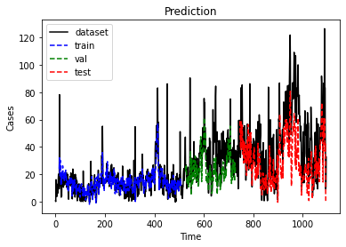

#import required libraries
import numpy as np
import pandas as pd
import matplotlib.pyplot as plt
import matplotlib as mpl
import math
import random
from sklearn.base import BaseEstimator
from sklearn.base import TransformerMixin
from sklearn.preprocessing import MinMaxScaler
from sklearn.metrics import mean_squared_error
import torch
import torch.nn as nn
from torch.utils.data import TensorDataset, DataLoader
from torch.utils.data import Dataset
import torch.optim as optim
import torch.distributions as distributions
from torch.nn.utils.rnn import pad_sequence, pack_padded_sequence, pad_packed_sequence
import torch.nn.functional as F
from torch.nn import Module, Parameter
from datetime import datetime as dt
import datetime
device = "cuda" if torch.cuda.is_available() else "cpu"
seed = 67686970
random.seed(seed)
torch.manual_seed(seed)
<torch._C.Generator at 0x7f260dcaa8f0>
def read_data():
# Load CSV into dataframe and format
df = pd.read_csv('final_daily.csv')
df['date']=pd.to_datetime(df['date'])
df=df[df['date']<datetime.datetime(2023,1,1)]
variable = ['price', 'demand']
scaler = MinMaxScaler()
df[variable] = scaler.fit_transform(df[variable].values.reshape(-1, len(variable)))
VAL_PERC = 0.30
n_train = int(len(df[:-365]) * (1 - VAL_PERC))
dataframe_train = df[variable][0:n_train]
train_df = dataframe_train.values.reshape(-1, len(variable))
dataframe_val = df[variable][n_train:-365]
val_df = dataframe_val.values.reshape(-1, len(variable))
dataframe_test = df[variable][-365:]
test_df = dataframe_test.values.reshape(-1, len(variable))
dataframe_dataset = df[variable][0:df.shape[0]]
dataset= dataframe_dataset.values.reshape(-1, len(variable))
return df, train_df, val_df, test_df, dataset, scaler
def to_sequences(dataset, seq_size): # seq_size is Number of time steps to look back
#Larger sequences (look further back) may improve forecasting.
x = []
y = []
for i in range(len(dataset)-seq_size-1):
window = dataset[i:(i+seq_size), :]
x.append(window)
y.append(dataset[i+seq_size, :])
print(np.array(x).shape)
return np.array(x),np.array(y)
class EarlyStopping:
"""Early stops the training if validation loss doesn't improve after a given patience."""
def __init__(self, patience=7, verbose=False, delta=0):
"""
Args:
patience (int): How long to wait after last time validation loss improved.
Default: 7
verbose (bool): If True, prints a message for each validation loss improvement.
Default: False
delta (float): Minimum change in the monitored quantity to qualify as an improvement.
Default: 0
"""
self.patience = patience
self.verbose = verbose
self.counter = 0
self.best_score = None
self.early_stop = False
self.val_loss_min = np.Inf
self.delta = delta
def __call__(self, val_loss):
score = -val_loss
if self.best_score is None:
self.best_score = score
elif score < self.best_score + self.delta:
self.counter += 1
print(f'EarlyStopping counter: {self.counter} out of {self.patience}')
if self.counter >= self.patience:
self.early_stop = True
else:
self.best_score = score
self.counter = 0
class PositionalEncoding(nn.Module):
def __init__(self, d_model, max_len=10000):
super(PositionalEncoding, self).__init__()
pe = torch.zeros(max_len, d_model)
position = torch.arange(0, max_len, dtype=torch.float).unsqueeze(1)
div_term = torch.exp(torch.arange(0, d_model, 2).float() * (-math.log(10000.0) / d_model))
pe[:, 0::2] = torch.sin(position * div_term)
pe[:, 1::2] = torch.cos(position * div_term)
pe = pe.unsqueeze(0).transpose(0, 1)
self.register_buffer('pe', pe)
def forward(self, x):
return x + self.pe[:x.size(0), :]
class Transformer(nn.Module):
def __init__(self, d_model, feature_size=250, num_layers=1, n_heads=2, dimfeedforward=512, dropout=0.1):
super(Transformer, self).__init__()
self.src_mask = None
self.d_model = d_model
self.project_inp = nn.Linear(feature_size, d_model)
self.pos_encoder = PositionalEncoding(d_model)
self.encoder_layer = nn.TransformerEncoderLayer(d_model=d_model, nhead=n_heads, dropout=dropout, dim_feedforward=dimfeedforward)
self.transformer_encoder = nn.TransformerEncoder(self.encoder_layer, num_layers=num_layers)
self.ln1 = nn.Linear(d_model, 512)
self.ln2 = nn.Linear(512, 256)
self.decoder = nn.Linear(256, feature_size)
self.relu = nn.ReLU()
self.dropout = nn.Dropout(0.05)
self.init_weights()
def init_weights(self):
initrange = 0.1
self.decoder.bias.data.zero_()
self.decoder.weight.data.uniform_(-initrange, initrange)
def forward(self, src):
if self.src_mask is None or self.src_mask.size(0) != len(src):
device = src.device
mask = self._generate_square_subsequent_mask(seq_size).to(device)
self.src_mask = mask
src = src.view(1, 2, -1)
#src = src.view(src.size()[0], 2, -1)
src = src.permute(2, 0, 1)
src = self.project_inp(src) * math.sqrt(self.d_model)
src = self.pos_encoder(src)
output = self.transformer_encoder(src,self.src_mask)
#output = self.activation(output)
output = output.permute(1, 2, 0)
output = self.ln1(output[:, -1, :])
output = self.dropout(self.relu(output))
output = self.ln2(output)
output = self.dropout(self.relu(output))
output = self.decoder(output)
return output
def _generate_square_subsequent_mask(self, sz):
mask = (torch.triu(torch.ones(sz, sz)) == 1).transpose(0, 1)
mask = mask.float().masked_fill(mask == 0, float('-inf')).masked_fill(mask == 1, float(0.0))
return mask
class Optimization:
def __init__(self, model, loss_fn, optimizer):
self.model = model
self.loss_fn = loss_fn
self.optimizer = optimizer
self.train_losses = []
self.val_losses = []
def train_step(self, x, y):
# Sets model to train mode
x = torch.squeeze(x)
self.model.train()
# Makes predictions
yhat = self.model(x)
# Computes loss
loss = self.loss_fn(y, yhat)
# Computes gradients
loss.backward()
# Updates parameters and zeroes gradients
self.optimizer.step()
self.optimizer.zero_grad()
torch.nn.utils.clip_grad_norm_(model.parameters(), 0.25)
# Returns the loss
return yhat, loss.item()
def train(self, train_loader, val_loader, batch_size=64, n_epochs=50, n_features=1):
early_stopping = EarlyStopping(patience=15)
for epoch in range(1, n_epochs + 1):
train_pred = []
val_pred = []
batch_losses = []
validation_loss = 0
training_loss = 0
for x_batch, y_batch in train_loader:
x_batch = x_batch.view([batch_size, -1, n_features]).to(device)
y_batch = y_batch.to(device)
yhat, loss = self.train_step(x_batch, y_batch)
batch_losses.append(loss)
train_pred.append(yhat.detach().numpy())
training_loss = np.mean(batch_losses)
self.train_losses.append(training_loss)
with torch.no_grad():
batch_val_losses = []
for x_val, y_val in val_loader:
x_val = x_val.view([batch_size, -1, n_features]).to(device)
y_val = y_val.to(device)
self.model.eval()
yhat = self.model(x_val)
val_loss = self.loss_fn(y_val, yhat).item()
batch_val_losses.append(val_loss)
val_pred.append(yhat.numpy())
validation_loss = np.mean(batch_val_losses)
self.val_losses.append(validation_loss)
print(f"[{epoch}/{n_epochs}] Training loss: {training_loss:.10f}\t Validation loss: {validation_loss:.10f}")
# early stopping
early_stopping(validation_loss)
if early_stopping.early_stop:
print("We are at epoch:", epoch)
break
return np.array(train_pred), np.array(val_pred)
def plot_losses(self):
plt.plot(self.train_losses, label="Training loss")
plt.plot(self.val_losses, label="Validation loss")
plt.legend()
plt.title("Losses")
plt.show()
plt.close()
def evaluate(self, test_loader, batch_size=1, n_features=1):
with torch.no_grad():
testPredict = []
testValues = []
for x_test, y_test in test_loader:
x_test = x_test.view([batch_size, -1, n_features]).to(device)
y_test = y_test.to(device)
self.model.eval()
yhat = self.model(x_test)
testPredict.append(yhat.to(device).detach().numpy())
testValues.append(y_test.to(device).detach().numpy())
return np.array(testPredict), np.array(testValues)
def plotting (dataset, trainPredict, valPredict, testPredict, fcs = None):
# shift train predictions for plotting
#we must shift the predictions so that they align on the x-axis with the original dataset.
ext = 0
if fcs is not None:
ext = fcs.shape[0]
trainPredictPlot = np.empty((dataset.shape[0] + ext, dataset.shape[1]))
trainPredictPlot[:, :] = np.nan
trainPredictPlot[seq_size-1:len(trainPredict)+seq_size-1, :] = trainPredict
# shift val predictions for plotting
valPredictPlot = np.empty((dataset.shape[0] + ext, dataset.shape[1]))
valPredictPlot[:, :] = np.nan
valPredictPlot[len(trainPredict)+(seq_size*2)+1-1:len(trainPredict)+len(valPredict)+(seq_size*2), :] = valPredict
# shift test predictions for plotting
testPredictPlot = np.empty((dataset.shape[0] + ext, dataset.shape[1]))
testPredictPlot[:, :] = np.nan
testPredictPlot[len(trainPredict)+len(valPredict)+(seq_size*3)+1:len(trainPredict)+len(valPredict)+len(testPredict)+(seq_size*3)+1, :] = testPredict
if fcs is not None:
fcPredictPlot = np.empty((dataset.shape[0] + ext, dataset.shape[1]))
fcPredictPlot[:, :] = np.nan
fcPredictPlot[len(trainPredict)+len(valPredict)+len(testPredict)+(seq_size*3)+2:len(dataset)+ext-1, :] = fcs
# plot baseline and predictions
plt.plot(dataset, color='k', label='dataset')
plt.plot(trainPredictPlot, color='b', label='train', linestyle='dashed')
plt.plot(valPredictPlot, color='g', label='val', linestyle='dashed')
plt.plot(testPredictPlot, color='r', label='test', linestyle='dashed')
if fcs is not None:
plt.plot(fcPredictPlot, color='m', label='forecasts', linestyle='dashed')
plt.legend(loc="upper left")
plt.title("Prediction")
plt.xlabel("Time")
plt.ylabel("Cases")
mpl.rcParams['figure.dpi'] = 300
plt.show()
return
df, train, val, test, dataset, scaler = read_data()
seq_size = 16
batch_size = 1
# convert dataset into input/output
trainX, trainY = to_sequences(train, seq_size)
valX, valY = to_sequences(val, seq_size)
testX, testY = to_sequences(test, seq_size)
train_features = torch.Tensor(trainX)
train_targets = torch.Tensor(trainY)
val_features = torch.Tensor(valX)
val_targets = torch.Tensor(valY)
test_features = torch.Tensor(testX)
test_targets = torch.Tensor(testY)
train = TensorDataset(train_features, train_targets)
train_loader = DataLoader(train, batch_size=batch_size, shuffle=False, drop_last=True)
val = TensorDataset(val_features, val_targets)
val_loader = DataLoader(val, batch_size=batch_size, shuffle=False, drop_last=True)
test = TensorDataset(test_features, test_targets)
test_loader = DataLoader(test, batch_size=1, shuffle=False, drop_last=False)
(494, 16, 2)
(203, 16, 2)
(348, 16, 2)
input_dim = seq_size
output_dim = trainX.shape[2]
hidden_dim = 36
layer_dim = 1
dropout = 0
n_epochs = 1000
learning_rate = 1e-5
weight_decay = 0
model = Transformer(feature_size=output_dim, d_model=input_dim, num_layers=1, dropout=0)
loss_fn = nn.MSELoss(reduction="mean")
optimizer = optim.Adam(model.parameters(), lr=learning_rate, weight_decay=weight_decay)
start = dt.now()
opt = Optimization(model=model, loss_fn=loss_fn, optimizer=optimizer)
train_pred, val_pred = opt.train(train_loader, val_loader, batch_size=batch_size, n_epochs=n_epochs, n_features=input_dim)
opt.plot_losses()
testPredict, testValues = opt.evaluate(test_loader, batch_size=1, n_features=input_dim)
[1/1000] Training loss: 0.0282220245 Validation loss: 0.0534496529
[2/1000] Training loss: 0.0188605760 Validation loss: 0.0442038085
[3/1000] Training loss: 0.0140187707 Validation loss: 0.0376390716
[4/1000] Training loss: 0.0103110507 Validation loss: 0.0315797666
[5/1000] Training loss: 0.0088527978 Validation loss: 0.0281392526
[6/1000] Training loss: 0.0079765030 Validation loss: 0.0265035916
[7/1000] Training loss: 0.0072879054 Validation loss: 0.0262741903
[8/1000] Training loss: 0.0074716129 Validation loss: 0.0243405041
[9/1000] Training loss: 0.0068035671 Validation loss: 0.0228209224
[10/1000] Training loss: 0.0062848863 Validation loss: 0.0214861287
[11/1000] Training loss: 0.0064403029 Validation loss: 0.0207477895
[12/1000] Training loss: 0.0061913321 Validation loss: 0.0194866911
[13/1000] Training loss: 0.0060434417 Validation loss: 0.0187115897
[14/1000] Training loss: 0.0056747173 Validation loss: 0.0175912610
[15/1000] Training loss: 0.0057627074 Validation loss: 0.0184812746
EarlyStopping counter: 1 out of 15
[16/1000] Training loss: 0.0058341512 Validation loss: 0.0178280949
EarlyStopping counter: 2 out of 15
[17/1000] Training loss: 0.0056505599 Validation loss: 0.0187692895
EarlyStopping counter: 3 out of 15
[18/1000] Training loss: 0.0055129521 Validation loss: 0.0176333227
EarlyStopping counter: 4 out of 15
[19/1000] Training loss: 0.0055618892 Validation loss: 0.0170568640
[20/1000] Training loss: 0.0052513172 Validation loss: 0.0168169603
[21/1000] Training loss: 0.0055277667 Validation loss: 0.0175380689
EarlyStopping counter: 1 out of 15
[22/1000] Training loss: 0.0052961383 Validation loss: 0.0169787793
EarlyStopping counter: 2 out of 15
[23/1000] Training loss: 0.0054036215 Validation loss: 0.0167595938
[24/1000] Training loss: 0.0051478197 Validation loss: 0.0166214081
[25/1000] Training loss: 0.0053764244 Validation loss: 0.0158528930
[26/1000] Training loss: 0.0050722773 Validation loss: 0.0170556824
EarlyStopping counter: 1 out of 15
[27/1000] Training loss: 0.0049038976 Validation loss: 0.0162616078
EarlyStopping counter: 2 out of 15
[28/1000] Training loss: 0.0050512476 Validation loss: 0.0157453197
[29/1000] Training loss: 0.0049281115 Validation loss: 0.0162445239
EarlyStopping counter: 1 out of 15
[30/1000] Training loss: 0.0049633489 Validation loss: 0.0164006838
EarlyStopping counter: 2 out of 15
[31/1000] Training loss: 0.0050967125 Validation loss: 0.0152802993
[32/1000] Training loss: 0.0048434083 Validation loss: 0.0154912165
EarlyStopping counter: 1 out of 15
[33/1000] Training loss: 0.0047116601 Validation loss: 0.0158128799
EarlyStopping counter: 2 out of 15
[34/1000] Training loss: 0.0047028405 Validation loss: 0.0155514321
EarlyStopping counter: 3 out of 15
[35/1000] Training loss: 0.0046907547 Validation loss: 0.0157131024
EarlyStopping counter: 4 out of 15
[36/1000] Training loss: 0.0046553463 Validation loss: 0.0156331264
EarlyStopping counter: 5 out of 15
[37/1000] Training loss: 0.0048823479 Validation loss: 0.0159510504
EarlyStopping counter: 6 out of 15
[38/1000] Training loss: 0.0045465159 Validation loss: 0.0153424399
EarlyStopping counter: 7 out of 15
[39/1000] Training loss: 0.0045181463 Validation loss: 0.0147993577
[40/1000] Training loss: 0.0045623399 Validation loss: 0.0154358721
EarlyStopping counter: 1 out of 15
[41/1000] Training loss: 0.0047072575 Validation loss: 0.0145730330
[42/1000] Training loss: 0.0047667680 Validation loss: 0.0158926737
EarlyStopping counter: 1 out of 15
[43/1000] Training loss: 0.0044585921 Validation loss: 0.0149885188
EarlyStopping counter: 2 out of 15
[44/1000] Training loss: 0.0044929711 Validation loss: 0.0151707544
EarlyStopping counter: 3 out of 15
[45/1000] Training loss: 0.0044630601 Validation loss: 0.0150435098
EarlyStopping counter: 4 out of 15
[46/1000] Training loss: 0.0043947274 Validation loss: 0.0150383588
EarlyStopping counter: 5 out of 15
[47/1000] Training loss: 0.0046677847 Validation loss: 0.0152945465
EarlyStopping counter: 6 out of 15
[48/1000] Training loss: 0.0044325723 Validation loss: 0.0156763741
EarlyStopping counter: 7 out of 15
[49/1000] Training loss: 0.0046179345 Validation loss: 0.0161024297
EarlyStopping counter: 8 out of 15
[50/1000] Training loss: 0.0043308652 Validation loss: 0.0145657318
[51/1000] Training loss: 0.0042906100 Validation loss: 0.0142891376
[52/1000] Training loss: 0.0043893195 Validation loss: 0.0145485854
EarlyStopping counter: 1 out of 15
[53/1000] Training loss: 0.0044947207 Validation loss: 0.0146135032
EarlyStopping counter: 2 out of 15
[54/1000] Training loss: 0.0041556519 Validation loss: 0.0141619135
[55/1000] Training loss: 0.0044641930 Validation loss: 0.0138746959
[56/1000] Training loss: 0.0043530789 Validation loss: 0.0150942242
EarlyStopping counter: 1 out of 15
[57/1000] Training loss: 0.0041343083 Validation loss: 0.0140940451
EarlyStopping counter: 2 out of 15
[58/1000] Training loss: 0.0041887946 Validation loss: 0.0145039047
EarlyStopping counter: 3 out of 15
[59/1000] Training loss: 0.0042743632 Validation loss: 0.0139446214
EarlyStopping counter: 4 out of 15
[60/1000] Training loss: 0.0040889741 Validation loss: 0.0145121003
EarlyStopping counter: 5 out of 15
[61/1000] Training loss: 0.0042643917 Validation loss: 0.0146151343
EarlyStopping counter: 6 out of 15
[62/1000] Training loss: 0.0042390115 Validation loss: 0.0141996583
EarlyStopping counter: 7 out of 15
[63/1000] Training loss: 0.0040689822 Validation loss: 0.0143519706
EarlyStopping counter: 8 out of 15
[64/1000] Training loss: 0.0042080000 Validation loss: 0.0141113696
EarlyStopping counter: 9 out of 15
[65/1000] Training loss: 0.0041007165 Validation loss: 0.0146749471
EarlyStopping counter: 10 out of 15
[66/1000] Training loss: 0.0040983369 Validation loss: 0.0141240999
EarlyStopping counter: 11 out of 15
[67/1000] Training loss: 0.0040653884 Validation loss: 0.0141352748
EarlyStopping counter: 12 out of 15
[68/1000] Training loss: 0.0040093493 Validation loss: 0.0140443809
EarlyStopping counter: 13 out of 15
[69/1000] Training loss: 0.0039034015 Validation loss: 0.0141646691
EarlyStopping counter: 14 out of 15
[70/1000] Training loss: 0.0040092424 Validation loss: 0.0139839084
EarlyStopping counter: 15 out of 15
We are at epoch: 70
df_train = scaler.inverse_transform(train_pred.reshape(-1, 2))
df_val = scaler.inverse_transform(val_pred.reshape(-1, 2))
df_test = scaler.inverse_transform(testPredict.reshape(-1, 2))
dataset = scaler.inverse_transform(dataset)
plotting (dataset[:, 0].reshape(-1, 1), df_train[:, 0].reshape(-1, 1), df_val[:, 0].reshape(-1, 1), df_test[:, 0].reshape(-1, 1)) #plotting without inverse_transform

np.square(df_test[:, 0] - scaler.inverse_transform(testY)[:, 0]).mean()
621.2875644002302
np.abs(df_test[:, 0] - scaler.inverse_transform(testY)[:, 0]).mean()
19.793293757743534
def mape(x, y):
error = abs(x-y)/abs(x)
error[error > 1] = 1
return np.mean(error)
mape(df_test[:, 0], scaler.inverse_transform(testY)[:, 0])
0.5972092375987983
np.square(df_test[:, 1] - scaler.inverse_transform(testY)[:, 1]).mean()
489325704.1631758
np.abs(df_test[:, 1] - scaler.inverse_transform(testY)[:, 1]).mean()
17509.55028735632
def mape(x, y):
error = abs(x-y)/abs(x)
error[error > 1] = 1
return np.mean(error)
mape(df_test[:, 1], scaler.inverse_transform(testY)[:, 1])
0.04769337161993548